Buscar Carona (SCR-USR-003): ARTE APROVADA x TELA REAL
Esquerda: arte aprovada. Direita: captura da tela real construída, rodando contra o banco de verdade (26 verificações automáticas passaram). Ainda NÃO publicado: só no seu computador. Fora da tela, por não haver dado real: foto e nota do motorista, Match %, mapa, mensagem, buscas recentes.
1. Buscar e ver caronas — desktop
ARTEimagem 05, painel desktop

TELA REAL: formulário01-desktop-form.png
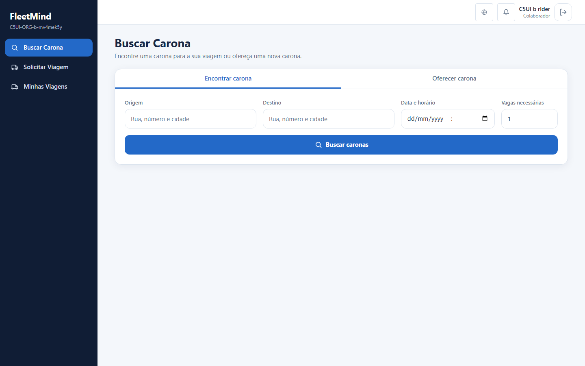
TELA REAL: resultado02-desktop-results.png
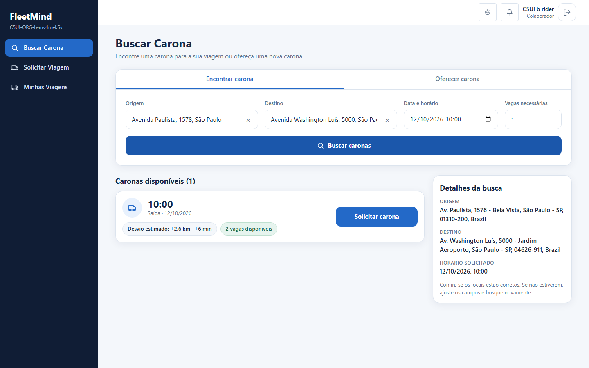
2. Solicitação enviada
ARTEpainel 5, mobile

TELA REAL: desktop04-desktop-request-sent.png
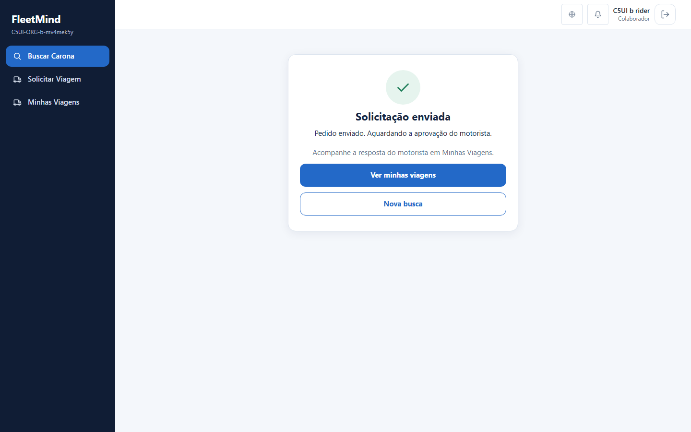
TELA REAL: mobile07-mobile-request-sent.png
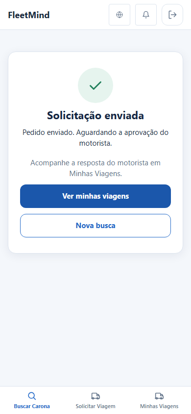
3. Mobile: lista
ARTEpainel 2, mobile
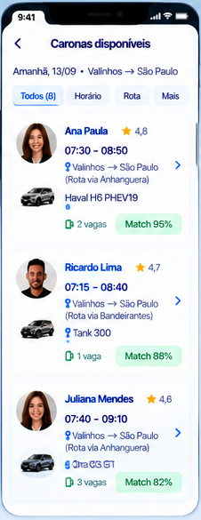
TELA REAL05-mobile-form.png e 06-mobile-results.png
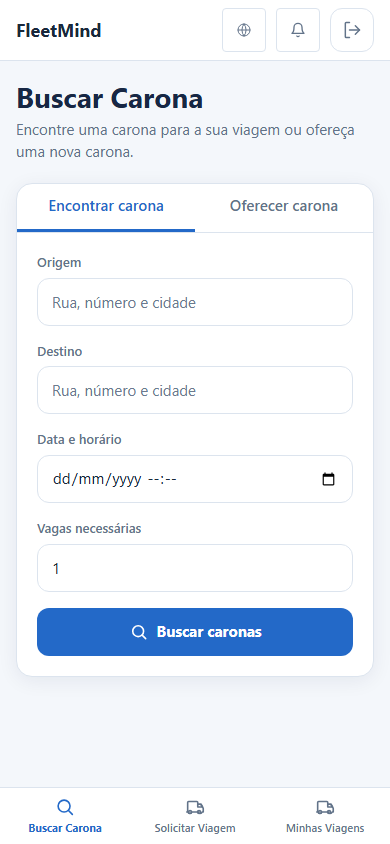
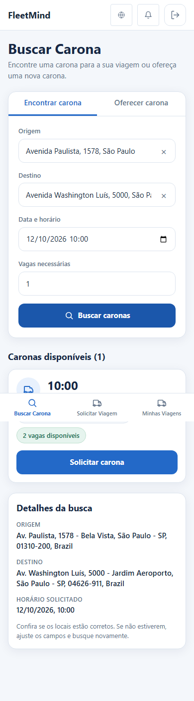
4. Sem carona (só a mensagem), precisa endereço preciso, erro, queda do Google, bloqueado — sem arte
Sem carona compatível03
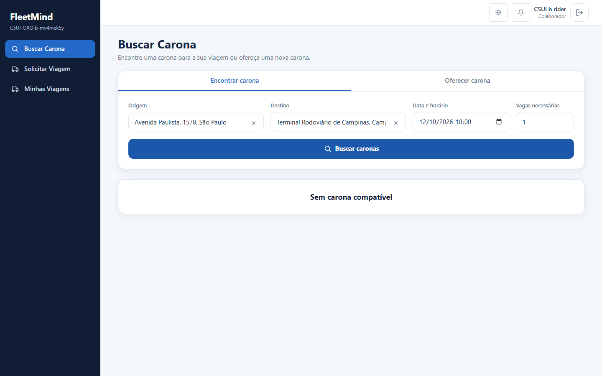
Endereço mais preciso08
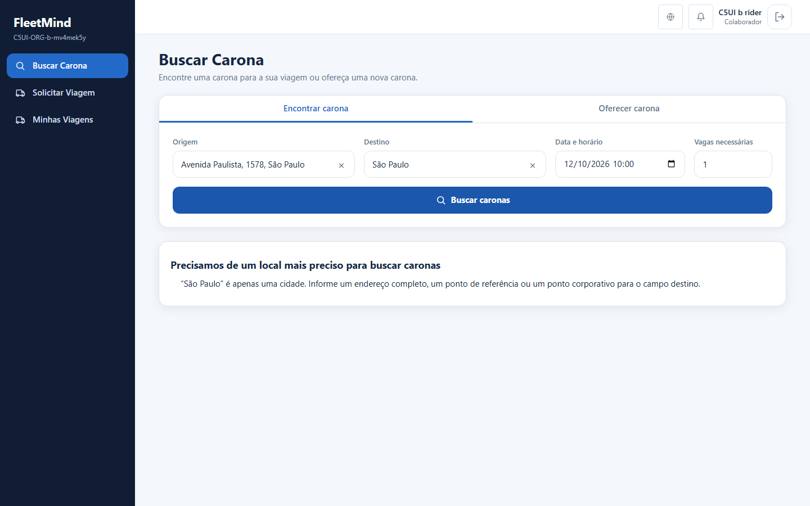
Erro ao solicitar09
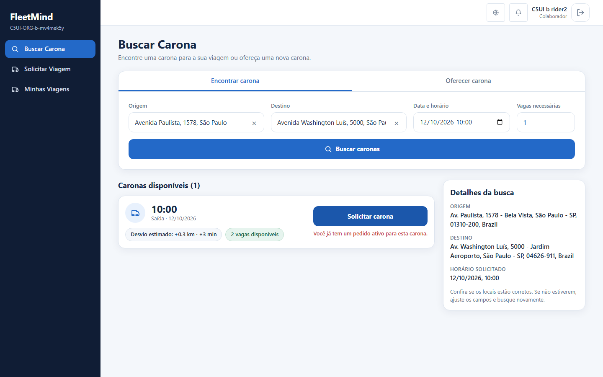
Queda do Google10
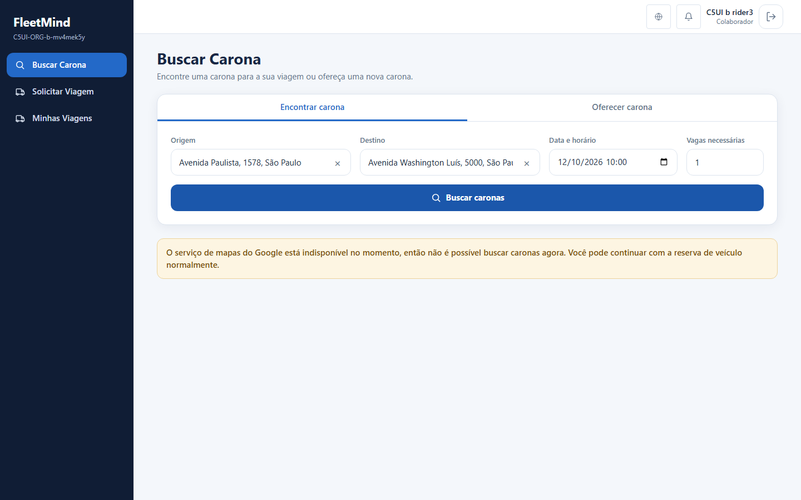
Carona desligada pela política11
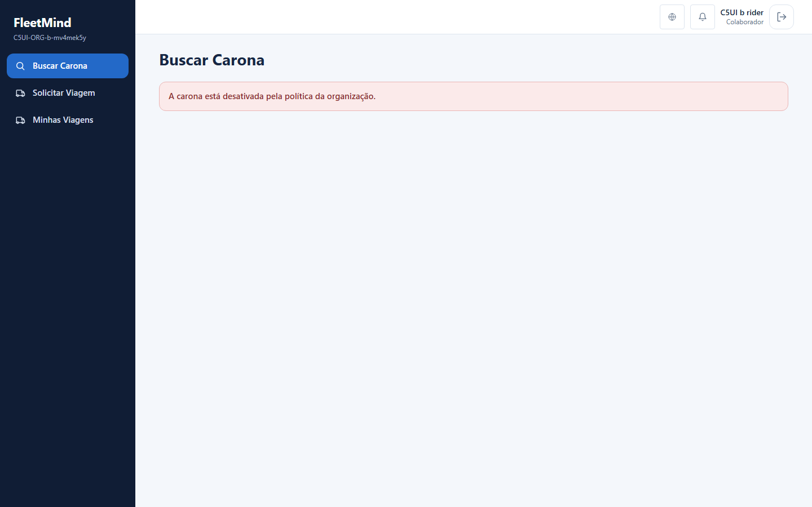